required <- c("NHANES", "dplyr", "ggplot2", "broom", "quantreg", "sandwich", "lmtest")
missing <- required[!vapply(required, requireNamespace, logical(1), quietly = TRUE)]
if (length(missing) > 0) {
stop(
"다음 패키지를 먼저 설치하세요: ",
paste(missing, collapse = ", ")
)
}
library(NHANES)
library(dplyr)
library(ggplot2)
library(broom)
library(quantreg)
library(sandwich)
library(lmtest)
set.seed(2026)3 회귀분석
Regression Analysis
3.1 서론
보건의료 연구에서 가장 자주 제기되는 질문은 한 변수의 변화가 다른 변수의 변화와 어떤 관련을 갖는가이다. 예를 들어 연령이 증가할수록 체질량지수(body mass index, BMI)가 증가하는지, 특정 질환을 가진 사람이 그렇지 않은 사람보다 의료비를 더 많이 지출하는지, 치료를 받은 환자의 결과가 치료를 받지 않은 환자보다 좋은지를 알고자 한다. 회귀분석(regression analysis)은 이러한 관계를 정량화하는 대표적인 통계적 틀이다.
회귀분석은 결과변수의 평균이 개인의 특성, 임상적 요인, 사회경제적 요인 또는 환경적 요인에 따라 어떻게 달라지는지를 모형화한다. 결과변수가 연속형이면 선형회귀를, 이분형이면 로지스틱 회귀를, 계수형이면 포아송 또는 음이항 회귀를 사용할 수 있다. 이 장에서는 연속형 결과를 대상으로 하는 선형회귀를 중심으로 회귀분석의 핵심 개념을 다룬다.
분석 목적에 따라 동일한 회귀모형도 서로 다른 방식으로 사용된다. 이 장에서 구분하는 네 가지 목적은 다음과 같다.
| 분석 목적 | 대표적인 연구 질문 | 주된 도구 또는 평가 기준 |
|---|---|---|
| 연관성 정량화 | 비만과 관련된 추가 의료비는 얼마인가? | 회귀계수, 신뢰구간, 가설검정 |
| 변이 설명 | 사회경제적 요인이 의료비 변이를 얼마나 설명하는가? | \(R^2\), 수정 \(R^2\), F 검정 |
| 중재 효과 추정 | 만성통증을 제거하면 의료비가 얼마나 감소하는가? | 인과추론, 성향점수, 표준화 |
| 결과 예측 | 환자 특성으로 다음 해 의료비를 얼마나 정확히 예측할 수 있는가? | 예측오차, 교차검증, 외부검증 |
이 네 목적은 서로 배타적이지 않지만, 모형의 선택과 평가 기준은 목적에 따라 달라져야 한다. 연관성을 설명하는 데 적절한 모형이 반드시 예측 성능이 좋은 것은 아니며, 예측을 위해 선택한 모형의 회귀계수를 인과효과로 해석해서도 안 된다.
회귀분석에서 가장 먼저 명확히 해야 할 대상은 조건부 평균(conditional mean)이다. 공변량 벡터를 \(\mathbf X\)라 할 때 회귀함수는
\[ m(\mathbf x)=E(Y\mid \mathbf X=\mathbf x) \]
로 정의한다. 선형회귀는 이 미지의 함수 \(m(\mathbf x)\)를 계수의 선형결합으로 근사한다. 따라서 회귀계수는 자료에 존재하는 단순한 상관계수가 아니라, 특정 모형과 조정변수 집합 아래에서 정의되는 조건부 평균의 변화량이다. 어떤 변수를 \(\mathbf X\)에 포함하는지, 연속형 변수를 어떤 함수로 표현하는지, 상호작용을 허용하는지에 따라 추정대상 자체가 달라질 수 있다.
또한 회귀모형은 세 층으로 구분하여 이해하는 것이 유용하다. 첫째, 평균구조(mean structure)는 공변량에 따라 결과의 기대값이 어떻게 달라지는지를 나타낸다. 둘째, 분산구조(variance structure)는 같은 공변량 값을 가진 대상들 사이에서 결과가 얼마나 퍼져 있는지를 나타낸다. 셋째, 의존구조(dependence structure)는 반복측정, 가족, 병원 또는 지역 안의 관측값이 서로 얼마나 관련되어 있는지를 나타낸다. 평균구조가 올바르더라도 분산이나 의존구조를 잘못 다루면 표준오차와 신뢰구간이 부정확해질 수 있다.
3.2 미국 체질량지수 추세 자료
이 장에서는 미국 국민건강영양조사(National Health and Nutrition Examination Survey, NHANES)의 1999-2000년과 2015-2016년 자료를 예시로 사용한다. 분석 대상은 20세에서 59세 성인이며, 결과변수는 BMI이다.
BMI는 다음과 같이 계산한다.
\[ \mathrm{BMI}=\frac{\text{체중(kg)}}{\{\text{신장(m)}\}^2}. \]
일반적으로 BMI가 18.5 미만이면 저체중, 18.5 이상 25 미만이면 정상, 25 이상 30 미만이면 과체중, 30 이상이면 비만으로 분류한다. 그러나 이 장에서는 BMI를 범주화하지 않고 연속형 결과로 분석한다.
연속형 값을 범주화하면 결과를 임상적으로 설명하기 쉬워질 수 있지만, 범주 경계 안의 차이를 모두 같게 취급하고 경계 양쪽의 매우 작은 차이를 서로 다른 상태로 처리한다. 이로 인해 정보가 손실되고 검정력이 감소하며, 선택한 절단점에 따라 결과가 달라질 수 있다. 따라서 이 장에서는 BMI의 연속적 변이를 보존하여 평균 차이와 추세를 추정한다. 다만 BMI는 체성분을 직접 측정하는 지표가 아니므로, 회귀계수의 임상적 의미는 연구대상과 목적에 맞게 해석해야 한다.
NHANES는 층화, 군집추출과 불균등한 포함확률을 사용하는 복합표본조사이다. 본 장의 수치는 회귀모형의 원리를 설명하기 위한 단순화된 예시이며, 미국 성인 모집단에 대한 공식 추정을 목적으로 하지 않는다. 모집단 평균이나 표준오차를 추정하려면 조사 가중치, 층화변수와 군집변수를 반영한 조사자료 분석이 필요하다.
3.3 회귀분석을 바라보는 네 가지 관점
3.3.1 연관성의 정량화
회귀분석은 공변량 \(X\)와 결과 \(Y\)의 연관성을 하나 이상의 계수로 요약한다. 단순선형회귀에서 기울기는 \(X\)가 1단위 증가할 때 결과의 평균이 얼마나 변하는지를 나타낸다. 관찰연구에서 이러한 연관성은 반드시 인과관계를 의미하지 않는다.
비선형 관계는 \(X^2\), \(\log(X)\)와 같은 변환항을 포함하거나 결과변수 \(Y\)를 변환하여 표현할 수 있다. 중요한 점은 연구 질문과 자료의 구조에 적합한 함수 형태를 선택하는 것이다.
다중회귀의 계수는 다른 공변량을 고정한 조건부 연관성을 나타낸다. 예를 들어
\[ E(Y\mid X,Z)=\beta_0+\beta_1X+\beta_2Z \]
에서 \(\beta_1\)은 같은 \(Z\) 값을 가진 대상들 사이에서 \(X\)가 1단위 다른 경우의 평균 결과 차이다. 이는 \(Z\)를 고려하지 않은 주변 평균 차이 \(E(Y\mid X=x+1)-E(Y\mid X=x)\)와 일반적으로 같지 않다. 특히 \(X\)와 \(Z\)가 서로 관련되어 있거나 상호작용이 존재하면 조건부 효과와 주변 효과의 차이가 커질 수 있다.
선형모형에서 연속형 \(X\)의 조건부 평균에 대한 국소 변화율은
\[ \frac{\partial E(Y\mid X,Z)}{\partial X}=\beta_1 \]
이다. 이 관계는 \(X\)의 효과가 모든 값에서 일정하다는 선형성 가정을 직접 보여준다. \(X^2\)를 포함하면 변화율은 \(\beta_1+2\beta_2X\)가 되어 \(X\)의 수준에 따라 달라진다.
3.3.2 변이의 설명
회귀분석은 결과의 전체 변이 중 공변량이 설명하는 부분과 설명하지 못하는 부분을 구분한다. 공변량을 고려하지 않을 때의 변이는 전체 평균 \(E(Y)\) 주변의 변이이며, 공변량을 고려할 때의 변이는 조건부 평균 \(E(Y\mid X)\) 주변의 변이이다.
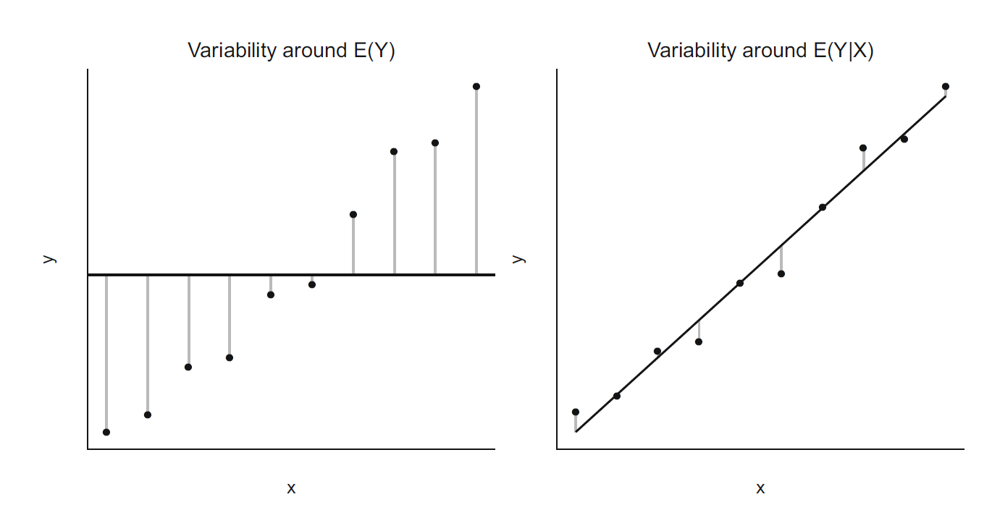
공변량이 결과를 잘 설명하면 조건부 평균 주변의 잔차 변이는 작아진다. 그러나 통계적으로 유의한 연관성이 존재하더라도 설명되는 변이의 비율은 작을 수 있다. 대규모 관찰자료에서는 작은 평균 차이도 매우 정밀하게 추정되어 유의할 수 있기 때문이다.
그림에서 전체 평균만 사용할 때 각 관측값과 전체 평균 사이의 차이는 공변량에 의해 설명되는 부분과 설명되지 않는 부분을 모두 포함한다. 회귀선을 사용하면 관측값과 회귀선 사이의 수직거리가 잔차가 되며, 회귀선이 집단 간 평균 차이나 연속적 추세를 포착할수록 잔차제곱합은 감소한다. 다만 회귀선이 자료의 중심을 잘 통과하더라도 개인별 결과의 산포가 크면 잔차 변이는 여전히 클 수 있다.
전체 변이는 반복기댓값의 법칙에 따른 다음 분해로 이해할 수 있다.
\[ \operatorname{Var}(Y) = \operatorname{Var}\{E(Y\mid X)\} + E\{\operatorname{Var}(Y\mid X)\}. \]
첫 번째 항은 공변량에 따라 조건부 평균이 달라져 생기는 설명된 변이이고, 두 번째 항은 같은 공변량 값을 가진 대상들 사이에 남는 조건부 변이이다. 모집단 수준에서
\[ R^2_{\mathrm{pop}} = \frac{\operatorname{Var}\{E(Y\mid X)\}} {\operatorname{Var}(Y)} \]
는 조건부 평균이 전체 변이 중 어느 정도를 설명하는지를 나타낸다. 표본의 결정계수는 이 개념을 표본 제곱합으로 추정한 것이다.
3.3.3 중재 효과의 추정
중재변수의 회귀계수를 중재의 인과효과로 해석하려면 단순한 연관성 이상의 가정이 필요하다. 무작위배정이 없는 관찰연구에서는 치료 선택과 결과에 동시에 영향을 주는 교란변수가 존재할 수 있다. 따라서 회귀모형을 이용한 인과추론에서는 교란 조정, 시간적 선후관계, 측정오차, 선택편향 등을 함께 고려해야 한다.
이분형 중재 \(A\)에 대해 \(Y(1)\)과 \(Y(0)\)를 각각 중재를 받았을 때와 받지 않았을 때의 잠재결과라 하면 평균처치효과는
\[ \operatorname{ATE}=E\{Y(1)-Y(0)\} \]
이다. 한 사람에게서 두 잠재결과를 동시에 관찰할 수 없으므로, 관찰자료에서는 공변량 \(L\)을 조건으로 중재배정이 잠재결과와 독립이라는 조건부 교환가능성
\[ \{Y(1),Y(0)\}\perp A\mid L \]
과 양의 확률, 일관성 등의 가정이 필요하다. 이 가정들이 성립하고 결과회귀모형이 올바르면 회귀 표준화를 이용하여
\[ E\{Y(a)\} = E_L\left[E(Y\mid A=a,L)\right] \]
를 추정할 수 있다. 즉, 회귀계수 하나를 그대로 인과효과로 읽기보다 각 대상의 공변량 값을 유지한 채 중재값만 \(a=1\)과 \(a=0\)으로 바꾸어 예측한 뒤 모집단에서 평균을 구한다. 상호작용이나 비선형성이 존재하면 이러한 표준화가 특히 중요하다.
3.3.4 결과의 예측
예측이 목적이면 개별 회귀계수의 해석보다 새로운 대상에서의 정확성이 더 중요하다. 이 경우 변수 선택, 비선형성, 상호작용, 규제화, 교차검증과 독립 검증자료가 핵심이 된다. 예측을 위해 자료 적응적으로 선택된 모형의 계수에 일반적인 p값을 부여하는 것은 적절하지 않을 수 있다.
제곱오차를 손실함수로 사용할 때 최적 예측함수는 조건부 평균이다.
\[ g^*(x) =\arg\min_{a} E\left[\{Y-a\}^2\mid X=x\right] =E(Y\mid X=x). \]
따라서 선형회귀는 조건부 평균을 단순하고 안정적으로 추정하는 예측모형으로도 볼 수 있다. 그러나 학습자료에서 계산한 잔차제곱합은 모형 선택 과정에 사용된 정보까지 재사용하므로 새로운 자료의 오차를 낙관적으로 평가한다. 예측 목적에서는 학습자료와 검증자료를 분리하거나 교차검증을 사용하여 표본 밖 예측오차(out-of-sample prediction error)를 평가해야 한다. 연속형 결과에서는 평균제곱오차, 평균절대오차와 예측구간의 포함률을 함께 확인하는 것이 유용하다.
3.4 회귀를 부분모집단 평균의 조직화로 이해하기
회귀모형은 공변량 값으로 정의되는 부분모집단의 평균을 체계적으로 연결한 것으로 이해할 수 있다. 공변량이 이분형이면 두 집단의 평균만 비교하면 되지만, 연령처럼 가능한 값이 많거나 공변량이 여러 개이면 각 부분모집단의 평균을 따로 계산하기 어렵다. 회귀모형은 이 평균들을 간결한 함수로 표현한다.
예를 들어 이분형 변수 \(X\in\{0,1\}\)만 포함한 모형
\[ E(Y\mid X)=\beta_0+\beta_1X \]
에서는
\[ \beta_0=E(Y\mid X=0), \qquad \beta_1=E(Y\mid X=1)-E(Y\mid X=0). \]
따라서 두 집단의 평균 비교는 선형회귀의 가장 단순한 특수한 경우이다. 범주가 여러 개이면 지시변수를 사용하여 각 범주의 평균을 연결하고, 연속형 공변량에서는 무수히 많은 부분모집단 평균을 직선이나 곡선으로 평활화한다.
전체 평균은 부분모집단 평균의 가중평균이다. 이분형 \(X\)의 경우
\[ E(Y) =P(X=0)E(Y\mid X=0) +P(X=1)E(Y\mid X=1). \]
따라서 전체 분포가 달라지는 이유는 각 부분모집단의 평균이 변하기 때문일 수도 있고, 부분모집단의 구성비가 변하기 때문일 수도 있다. 여러 시점이나 집단을 비교할 때 회귀조정은 이러한 구성 차이를 통제한 조건부 비교를 제공한다.
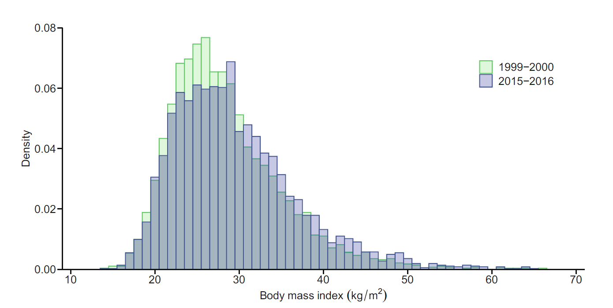
두 히스토그램의 수평적 이동은 조사주기별 평균 BMI 차이를 보여주지만, 분포가 넓게 겹친다는 점은 연도만으로 개인의 BMI를 정확히 구분하기 어렵다는 사실을 나타낸다. 평균 차이는 집단 수준의 위치 변화이고, 분포의 겹침은 개인 수준의 이질성을 반영한다. 회귀분석은 전자를 계수로 추정하지만 후자를 없애지는 않는다.
전체 표본의 평균 BMI는 약 29.1이지만, 1999-2000년에는 약 28.4, 2015-2016년에는 약 29.6으로 증가한다. 반면 연도를 고려하기 전 BMI 분산은 약 49.8이고 연도별 평균을 제거한 후의 분산은 약 49.5이다. 따라서 연도가 설명하는 변이의 비율은 다음과 같이 매우 작다.
\[ \frac{49.8-49.5}{49.8}\times 100\%=0.7\%. \]
이는 연도와 BMI 사이의 평균적 연관성이 존재하더라도 개인 간 BMI 변이의 대부분은 다른 요인과 무작위 변동에 의해 설명된다는 뜻이다.
여기서 0.7%는 연도 효과가 임상적으로 중요하지 않다는 결론과 동일하지 않다. 평균 BMI의 작은 이동도 인구 전체에 적용되면 특정 BMI 범주에 속하는 사람의 비율을 변화시킬 수 있다. 반대로 \(R^2\)가 높더라도 추정된 평균 차이가 임상적으로 의미 있는 크기인지 별도로 판단해야 한다. 효과크기와 설명력은 서로 다른 질문에 답한다.
연령별 평균 BMI를 직접 계산하면 각 연령의 표본수가 제한되어 평균이 불규칙하게 변한다. 직선은 이러한 작은 변동을 평활화하고 연령과 BMI 사이의 전체 추세를 간결하게 나타낸다.
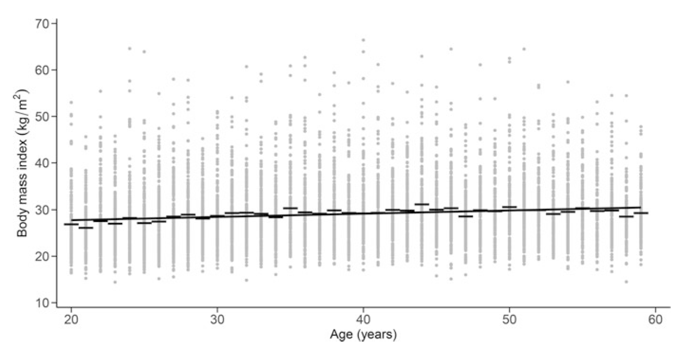
예시 회귀식은 다음과 같다.
\[ E(\mathrm{BMI}\mid \mathrm{AGE})=26.37+0.07\times \mathrm{AGE}. \]
이 식은 연령이 1세 증가할 때 평균 BMI가 약 0.07 증가한다고 요약한다.
두 연령 \(a\)와 \(a+d\)의 평균 BMI 차이는
\[ E(Y\mid A=a+d)-E(Y\mid A=a)=0.07d \]
이므로, 10세 차이에 대한 평균 차이는 약 0.7이다. 절편 26.37은 연령 0세의 외삽값이므로 이 분석대상인 20–59세 성인에서 직접적인 실질적 의미가 없다. 연령을 40세에서 중심화하면 동일한 기울기를 유지하면서 절편을 40세 성인의 평균 BMI로 해석할 수 있다.
그림의 산점도에서 한 점은 한 사람의 관측 BMI이며, 직선은 각 연령에서의 조건부 평균을 나타낸다. 점과 직선 사이의 수직거리가 잔차이다. 직선 주위의 산포가 큰 것은 같은 연령에서도 BMI가 상당히 다르다는 뜻이며, 연령 계수가 유의하더라도 개인별 BMI 예측에는 큰 불확실성이 남을 수 있음을 보여준다.
3.5 선형회귀식과 가정
3.5.1 체계적 부분
\(k\)개의 공변량을 갖는 선형회귀모형의 조건부 평균은 다음과 같다.
\[ E(Y\mid X_1,\ldots,X_k) =\beta_0+\beta_1X_1+\cdots+\beta_kX_k. \]
\(\beta_0\)는 모든 공변량이 0 또는 기준범주일 때의 평균이고, \(\beta_j\)는 다른 공변량을 고정했을 때 \(X_j\)가 1단위 증가함에 따라 평균 결과가 변하는 양이다.
선형이라는 표현은 공변량과 결과가 반드시 직선 관계라는 뜻만은 아니다. \(X^2\), \(X^3\), \(\log(X)\) 또는 스플라인 기저함수를 새로운 공변량으로 포함해도 계수에 대해 선형이면 선형모형이다.
관측대상 \(i=1,\ldots,n\)에 대해 절편과 공변량을 행렬로 모으면 평균구조는
\[ E(\mathbf Y\mid \mathbf X)=\mathbf X\boldsymbol\beta \]
로 쓸 수 있다. 여기서 \(\mathbf X\)는 \(n\times p\) 설계행렬이고, \(\boldsymbol\beta\)는 \(p\times1\) 계수벡터이다. 계수의 선형성은 \(\boldsymbol\beta\)가 1차 결합으로 들어간다는 뜻이다. 예를 들어
\[ E(Y\mid X)=\beta_0+\beta_1X+\beta_2X^2 \]
는 \(X\)에 대해서는 곡선이지만 \(\beta_0,\beta_1,\beta_2\)에 대해서는 선형이다.
계수가 고유하게 식별되려면 설계행렬의 열들이 선형독립이어야 하며
\[ \operatorname{rank}(\mathbf X)=p \]
가 필요하다. 한 범주형 변수의 모든 범주 지시변수와 절편을 동시에 포함하거나 한 공변량이 다른 공변량의 정확한 선형결합이면 완전 다중공선성이 발생한다.
3.5.2 확률적 부분
개인 \(i\)의 결과는 조건부 평균과 오차항으로 표현한다.
\[ Y_i=\beta_0+\beta_1X_{i1}+\cdots+\beta_kX_{ik}+\varepsilon_i. \]
고전적 선형회귀는 일반적으로 다음을 가정한다.
\[ E(\varepsilon_i\mid X_i)=0, \]
\[ \operatorname{Var}(\varepsilon_i\mid X_i)=\sigma^2, \]
\[ \varepsilon_i\perp\varepsilon_j\quad(i\ne j), \]
그리고 작은 표본에서 정확한 t 검정과 F 검정을 위해
\[ \varepsilon_i\sim N(0,\sigma^2) \]
를 가정한다.
핵심 가정은 다음과 같다.
- 조건부 평균의 적절한 함수 형태: 누락된 비선형성이나 상호작용이 없어야 한다.
- 오차의 평균이 0: 공변량 값에 따라 체계적인 잔차 패턴이 없어야 한다.
- 등분산성: 잔차의 분산이 공변량 또는 적합값에 따라 달라지지 않아야 한다.
- 독립성: 개인, 가구, 병원, 지역 또는 반복측정 자료의 상관을 무시해서는 안 된다.
- 정규성: 주로 작은 표본의 추론에 필요하며, 대규모 표본에서는 계수 추정량의 근사정규성이 더 중요하다.
이 가정들의 역할은 서로 다르다. 조건부 평균 가정 \(E(\varepsilon\mid X)=0\)은 최소제곱 추정량의 불편성과 일치성을 위해 핵심적이다. 등분산성과 독립성은 고전적 표준오차 공식의 타당성에 필요하지만, 계수의 불편성을 위해 반드시 필요한 것은 아니다. 정규성은 공변량을 조건으로 한 유한표본 t 검정과 F 검정의 정확성을 보장한다.
또한 \(E(\varepsilon\mid X)=0\)은 단순히 표본 잔차의 평균이 0이라는 계산적 성질과 다르다. 절편이 포함된 최소제곱 회귀에서는 표본 잔차의 합이 항상 0이지만, 모집단에서 누락변수, 역인과성 또는 측정오차로 인해 오차가 공변량과 관련되어 있으면 회귀계수는 편향될 수 있다.
동일한 대상의 반복측정이나 같은 병원에 속한 환자처럼 오차가 상관되어 있으면
\[ \operatorname{Cov}(\varepsilon_i,\varepsilon_j\mid X)\ne0 \]
이다. 이 경우 점추정량이 여전히 해석 가능할 수 있지만 독립성을 가정한 표준오차는 대개 지나치게 작아진다. 자료의 실제 독립단위가 개인인지, 방문인지, 병원인지 먼저 확인해야 한다.
3.6 최소제곱 추정
관측값 \(Y_i\)와 모형의 적합값 \(\widehat{Y}_i\)의 차이를 잔차라고 한다.
\[ e_i=Y_i-\widehat{Y}_i. \]
최소제곱법은 잔차제곱합을 최소화하는 계수를 선택한다.
제곱을 사용하는 이유는 양의 잔차와 음의 잔차가 상쇄되지 않게 하고, 큰 오차에 더 큰 벌점을 부여하며, 미분 가능한 볼록 목적함수를 제공하기 때문이다. 다만 큰 잔차의 영향이 제곱으로 증가하므로 이상치에 민감하다. 이러한 특성은 최소절대편차나 분위수 회귀와 대비된다.
\[ \mathrm{SSE}(\boldsymbol\beta) =\sum_{i=1}^{n} \left(Y_i-\beta_0-\sum_{j=1}^{k}\beta_jX_{ij}\right)^2. \]
행렬기호로 \(\mathbf{Y}=\mathbf{X}\boldsymbol\beta+\boldsymbol\varepsilon\)라 쓰면 최소제곱 추정량은
\[ \widehat{\boldsymbol\beta} =(\mathbf{X}^{\mathsf T}\mathbf{X})^{-1} \mathbf{X}^{\mathsf T}\mathbf{Y} \]
이다. 이는 \(\mathbf{X}^{\mathsf T}\mathbf{X}\)가 역행렬을 가질 때 성립한다. 완전 다중공선성이 있으면 역행렬이 존재하지 않아 계수를 고유하게 추정할 수 없다.
이 결과는 잔차제곱합을 계수벡터에 대해 미분하여 얻는다. 행렬형 잔차제곱합은
\[ S(\boldsymbol\beta) =(\mathbf Y-\mathbf X\boldsymbol\beta)^{\mathsf T} (\mathbf Y-\mathbf X\boldsymbol\beta) \]
이고, 기울기를 0으로 놓으면
\[ \frac{\partial S}{\partial\boldsymbol\beta} =-2\mathbf X^{\mathsf T} (\mathbf Y-\mathbf X\boldsymbol\beta)=\mathbf0 \]
이므로 정규방정식
\[ \mathbf X^{\mathsf T}\mathbf X\widehat{\boldsymbol\beta} = \mathbf X^{\mathsf T}\mathbf Y \]
을 얻는다. 이를 풀면 위의 최소제곱 추정량이 된다.
적합값과 잔차는 각각
\[ \widehat{\mathbf Y}=\mathbf H\mathbf Y, \qquad \mathbf e=(\mathbf I-\mathbf H)\mathbf Y \]
로 표현되며,
\[ \mathbf H = \mathbf X(\mathbf X^{\mathsf T}\mathbf X)^{-1} \mathbf X^{\mathsf T} \]
를 모자행렬(hat matrix)이라 한다. 최소제곱은 관측벡터 \(\mathbf Y\)를 설계행렬의 열공간에 직교투영한다. 따라서
\[ \mathbf X^{\mathsf T}\mathbf e=\mathbf0 \]
이며, 잔차는 모형에 포함된 각 공변량과 표본 내에서 직교한다. 이는 모형이 인과적으로 올바르다는 뜻이 아니라 최소제곱 계산에서 생기는 기하학적 성질이다.
오차분산의 추정량은
\[ \widehat{\sigma}^2=\frac{\mathrm{SSE}}{n-p} \]
이며, \(p\)는 절편을 포함한 추정 계수의 수이다. 계수 추정량의 분산-공분산 행렬은
\[ \widehat{\operatorname{Var}} (\widehat{\boldsymbol\beta}) =\widehat{\sigma}^2 (\mathbf{X}^{\mathsf T}\mathbf{X})^{-1} \]
이다.
\(E(\boldsymbol\varepsilon\mid\mathbf X)=\mathbf0\)이면
\[ E(\widehat{\boldsymbol\beta}\mid\mathbf X) = \boldsymbol\beta \]
이므로 최소제곱 추정량은 조건부 불편추정량이다. 또한 등분산성과 독립성이 성립하면 Gauss–Markov 정리에 따라 최소제곱 추정량은 모든 선형 불편추정량 가운데 가장 작은 분산을 갖는다. 이 결과는 오차의 정규성을 요구하지 않는다. 정규성은 최소분산 성질이 아니라 정확한 유한표본 분포를 위해 추가된다.
오차분산 추정량의 분모가 \(n\)이 아니라 \(n-p\)인 이유는 \(p\)개의 계수를 자료에서 추정하면서 잔차 자유도 \(p\)개를 사용했기 때문이다. 모자행렬의 대각합이
\[ \operatorname{tr}(\mathbf H)=p \]
이고 잔차생성행렬의 대각합이 \(n-p\)라는 점에서도 같은 자유도 결과를 얻을 수 있다.
3.7 회귀계수의 해석
3.7.1 범주형 공변량
회귀계수는 항상 모형의 함수 형태와 기준값에 의존한다. 가법적 선형모형에서 \(\beta_j\)는 다른 공변량이 같은 두 대상의 평균 차이를 나타낸다. 이때 “다른 공변량을 고정한다”는 것은 실제로 한 개인의 값을 변화시키는 실험을 뜻하는 것이 아니라, 설계행렬에서 다른 열의 값을 같게 둔 조건부 비교를 뜻한다.
범주형 변수는 하나의 기준범주와 여러 개의 지시변수(dummy variable)로 표현한다. 예를 들어 성별에서 남성을 기준범주로 두고 여성 지시변수를 포함하면 여성의 계수는 다른 공변량이 같을 때 여성과 남성의 평균 BMI 차이다.
범주가 \(K\)개이면 일반적으로 \(K-1\)개의 지시변수를 사용한다. 기준범주 선택은 적합값이나 전체 검정에는 영향을 주지 않지만 개별 계수의 해석을 바꾼다.
예를 들어 세 범주 \(A\), \(B\), \(C\)에서 \(A\)를 기준으로 하면
\[ E(Y\mid G) = \beta_0+\beta_1I(G=B)+\beta_2I(G=C). \]
이때 \(\beta_0\)는 \(A\)의 평균, \(\beta_1\)은 \(B-A\)의 평균 차이, \(\beta_2\)는 \(C-A\)의 평균 차이다. \(B\)와 \(C\)의 차이는 단일 계수가 아니라
\[ E(Y\mid G=C)-E(Y\mid G=B) =\beta_2-\beta_1 \]
이라는 선형대조(contrast)로 검정한다. 범주형 변수의 전체 관련성은 \(K-1\)개 계수가 모두 0이라는 공동가설로 평가해야 한다.
3.7.2 연속형 공변량
연속형 공변량의 계수는 1단위 증가에 따른 평균 차이다. 단위가 너무 작거나 큰 경우 5년, 10단위 또는 표준편차 단위로 재척도화하면 해석이 쉬워진다.
\(X^*=X/c\)로 재척도화하면
\[ \beta_1X=(c\beta_1)X^* \]
이므로 \(X^*\)의 계수는 원래 계수의 \(c\)배가 된다. 예를 들어 연령을 10년 단위로 표현하면 계수는 10세 증가에 따른 평균 차이를 나타낸다. 표준화 변수
\[ Z_X=\frac{X-\bar X}{s_X} \]
를 사용하면 계수는 공변량 1표준편차 증가에 따른 평균 결과 차이이다. 그러나 표준화 계수의 크기는 표본의 변동성에 의존하므로 서로 다른 모집단 간 비교에는 주의가 필요하다.
연속형 변수의 0이 의미가 없으면 중심화를 사용할 수 있다. 연령의 중앙값이 38세라면
\[ \mathrm{AGE}_c=\mathrm{AGE}-38 \]
로 정의한다. 중심화 후 절편은 38세이면서 다른 범주형 공변량이 기준범주인 사람의 평균을 나타낸다. 중심화는 적합값과 기울기를 바꾸지 않는다.
실제로 원래 모형
\[ E(Y\mid A)=\beta_0+\beta_1A \]
에 \(A=A_c+38\)을 대입하면
\[ E(Y\mid A_c) =(\beta_0+38\beta_1)+\beta_1A_c \]
가 된다. 따라서 새 절편은 \(\beta_0+38\beta_1\)이고 기울기는 그대로 \(\beta_1\)이다. 상호작용이나 다항항이 있는 모형에서는 중심화가 하위차수 계수의 해석을 더 의미 있는 기준값으로 바꾸고 수치적 공선성을 줄이는 데도 도움이 될 수 있다.
| 공변량 유형 | 분석 시 확인할 점 |
|---|---|
| 연속형 | 선형성이 적절한가? 0은 의미가 있는가? 중심화 또는 표준화가 필요한가? |
| 명목형 범주 | 기준범주는 무엇인가? 희소한 범주를 합칠 필요가 있는가? |
| 순서형 범주 | 연속형으로 취급할 수 있는가? 범주 간 간격을 동일하게 볼 수 있는가? |
3.7.3 BMI 예시 모형
연령을 이분형으로 사용한 예시 결과는 다음과 같다.
| 변수 | 계수 | 표준오차 | p값 |
|---|---|---|---|
| 절편 | 26.97 | 0.20 | <0.001 |
| 여성 | 1.07 | 0.17 | <0.001 |
| 비히스패닉 흑인 | 1.95 | 0.24 | <0.001 |
| 멕시코계 미국인 | 1.38 | 0.23 | <0.001 |
| 기타 히스패닉 | 0.78 | 0.31 | 0.01 |
| 기타/혼합 | -2.39 | 0.30 | <0.001 |
| 50세 초과 | 0.65 | 0.21 | 0.002 |
| 2015-2016년 | 1.54 | 0.18 | <0.001 |
절편 26.97은 1999-2000년, 50세 이하, 남성, 비히스패닉 백인의 평균 BMI를 뜻한다. 연도 계수 1.54는 다른 공변량이 동일할 때 2015-2016년의 평균 BMI가 1999-2000년보다 1.54 높다는 뜻이다.
정규근사에 따른 95% 신뢰구간은
연도 계수는 성별, 인종·민족과 연령이 동일한 대상들 사이의 조정 평균 차이이다. 이는 실제로 동일한 사람이 두 조사주기에 모두 관찰되었다는 뜻이 아니며, 포함된 공변량으로 구성 차이를 통제한 조건부 비교이다. 모형에 포함하지 않은 코호트 차이, 측정방식 변화 또는 선택요인이 있으면 이 계수에 함께 반영될 수 있다.
계수의 표준오차는 반복표본에서 추정량이 얼마나 변동할지를 나타낸다. 정규근사에서 95% 신뢰구간은 추정치에 약 1.96개의 표준오차를 더하고 빼서 계산한다.
\[ 1.54\pm 1.96\times 0.18 =(1.19,1.89) \]
이다.
연령을 연속형으로 사용하면 예시 결과는 다음과 같다.
연령을 이분형으로 만들면 50세 이하의 모든 연령에 같은 평균을, 50세 초과의 모든 연령에 또 다른 평균을 부여한다. 반면 연속형 선형항은 20세에서 59세까지 일정한 기울기를 가정한다. 두 표현은 서로 다른 모형이므로 연도 계수도 1.54에서 1.47로 달라질 수 있다. 이는 조정변수의 함수 형태가 관심 계수의 추정에도 영향을 준다는 예이다.
| 변수 | 계수 | 표준오차 | p값 |
|---|---|---|---|
| 절편 | 24.51 | 0.35 | <0.001 |
| 여성 | 1.10 | 0.17 | <0.001 |
| 비히스패닉 흑인 | 1.93 | 0.24 | <0.001 |
| 멕시코계 미국인 | 1.44 | 0.23 | <0.001 |
| 기타 히스패닉 | 0.79 | 0.31 | <0.01 |
| 기타/혼합 | -2.35 | 0.30 | <0.001 |
| 연령 | 0.07 | 0.01 | <0.001 |
| 2015-2016년 | 1.47 | 0.18 | <0.001 |
3.8 교란
공변량 \(Z\)가 노출 \(X\)와 결과 \(Y\) 모두에 영향을 주면 \(Z\)는 \(X\)와 \(Y\) 관계의 교란변수(confounder)가 될 수 있다. 교란을 조정하지 않은 계수는 관심 노출의 효과와 교란변수의 효과가 섞인 값이다.
단순모형과 조정모형을 비교하면 교란의 크기를 확인할 수 있다.
\[ E(Y\mid X)=\beta_0+\beta_1X \]
과
\[ E(Y\mid X,Z)=\beta_0+\beta_1X+\beta_2Z \]
에서 \(\widehat\beta_1\)이 의미 있게 달라지면 \(Z\)가 연관성 추정에 영향을 준 것이다. 다만 계수 변화만으로 교란 여부를 기계적으로 결정해서는 안 되며, 변수 간 인과구조와 시간적 순서를 고려해야 한다.
중재 이후의 매개변수, 선택에 영향을 주는 충돌변수(collider), 결과의 일부를 구성하는 변수 등을 무분별하게 조정하면 오히려 편향이 생길 수 있다.
누락변수 편향은 단순한 선형 구조에서 수식으로 확인할 수 있다. 참모형이
\[ Y=\beta_0+\beta_1X+\beta_2Z+\varepsilon, \qquad E(\varepsilon\mid X,Z)=0 \]
인데 \(Z\)를 제외하고 \(Y\)를 \(X\)에만 회귀하면, 큰 표본에서 단순회귀 기울기는
\[ \widetilde\beta_1 \longrightarrow \beta_1 + \beta_2\frac{\operatorname{Cov}(X,Z)}{\operatorname{Var}(X)}. \]
따라서 \(Z\)가 결과와 관련되어 있어 \(\beta_2\ne0\)이고 동시에 노출과 관련되어 \(\operatorname{Cov}(X,Z)\ne0\)이면 \(X\)의 계수에 \(Z\)의 영향이 섞인다. 편향의 방향은 두 관계의 부호에 의해 결정된다.
그러나 어떤 변수를 조정해야 하는지는 통계적 관련성만으로 정할 수 없다. 노출 이전의 공통원인은 교란변수가 될 수 있지만, 노출의 결과인 매개변수를 조정하면 총효과의 일부를 제거한다. 노출과 결과의 공통 결과인 충돌변수를 조건화하면 원래 없던 연관성을 만들 수 있다. 따라서 변수 선택은 연구 시점과 인과구조에 근거해야 하며, 단계적 선택이나 p값 기준으로 교란변수를 정하는 것은 적절하지 않다.
3.9 상호작용과 효과수정
두 공변량의 결합효과가 각각의 효과를 단순히 더한 것과 다르면 상호작용(interaction)이 존재한다. 이분형 연도 \(X_1\)과 이분형 연령집단 \(X_2\)의 모형은 다음과 같다.
\[ E(Y\mid X_1,X_2) =\beta_0+\beta_1X_1+\beta_2X_2+\beta_3X_1X_2. \]
젊은 집단에서 연도 차이는 \(\beta_1\), 고령 집단에서는 \(\beta_1+\beta_3\)이다. 마찬가지로 기준연도에서 연령집단 차이는 \(\beta_2\), 후기 연도에서는 \(\beta_2+\beta_3\)이다.
상호작용을 포함하면 주효과 계수는 다른 상호작용 변수의 기준값에서의 효과로 해석해야 한다. 상호작용이 있는 모형에서 주효과를 전체 평균 효과로 해석하면 안 된다.
네 조합의 조건부 평균을 전개하면
\[ \begin{aligned} \mu_{00}&=\beta_0,\\ \mu_{10}&=\beta_0+\beta_1,\\ \mu_{01}&=\beta_0+\beta_2,\\ \mu_{11}&=\beta_0+\beta_1+\beta_2+\beta_3. \end{aligned} \]
따라서 상호작용 계수는
\[ \beta_3 =(\mu_{11}-\mu_{01})-(\mu_{10}-\mu_{00}) \]
로, 한 변수의 평균 차이가 다른 변수의 수준에 따라 얼마나 달라지는지를 나타내는 차이의 차이(difference in differences)이다. 선형회귀의 상호작용은 결과의 가법척도에서 정의된다. 결과를 로그변환하거나 다른 연결함수를 사용하면 상호작용의 의미도 해당 척도에 따라 달라진다.
연속형 변수끼리의 상호작용
\[ E(Y\mid X,Z)=\beta_0+\beta_1X+\beta_2Z+\beta_3XZ \]
에서는 \(X\)의 기울기가
\[ \frac{\partial E(Y\mid X,Z)}{\partial X} =\beta_1+\beta_3Z \]
가 된다. 즉, \(\beta_1\)은 \(Z=0\)에서의 기울기이므로 \(Z=0\)이 의미 없는 값이라면 중심화가 해석에 중요하다.
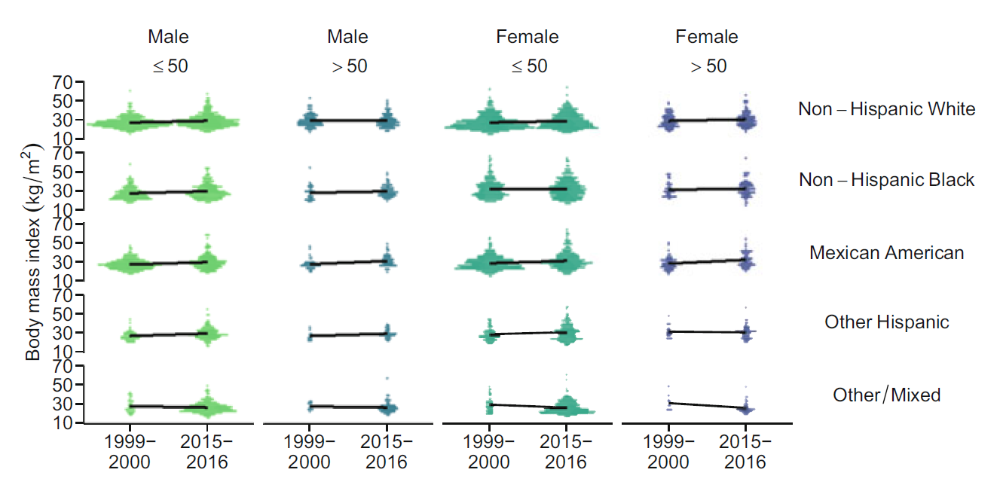
그림에서 두 집단의 선이 평행하면 연도 차이가 연령집단에 관계없이 같으므로 가법척도 상호작용은 없다. 선의 간격이 조사주기에 따라 달라지거나 두 선이 교차하면 상호작용을 시사한다. 다만 그림에서 보이는 비평행성이 표본변동을 넘어서는지는 상호작용항의 신뢰구간이나 공동검정으로 판단해야 한다.
연령집단과 연도의 상호작용을 포함한 예시는 다음과 같다.
| 변수 | 계수 | 표준오차 | p값 |
|---|---|---|---|
| 절편 | 26.92 | 0.20 | <0.001 |
| 여성 | 1.07 | 0.17 | <0.001 |
| 비히스패닉 흑인 | 1.96 | 0.24 | <0.001 |
| 멕시코계 미국인 | 1.39 | 0.23 | <0.001 |
| 기타 히스패닉 | 0.79 | 0.31 | 0.01 |
| 기타/혼합 | -2.40 | 0.30 | <0.001 |
| 50세 초과 | 0.95 | 0.34 | 0.006 |
| 2015-2016년 | 1.64 | 0.20 | <0.001 |
| 연령집단-연도 상호작용 | -0.49 | 0.44 | 0.30 |
젊은 집단의 연도 차이는 1.64이고, 고령 집단의 연도 차이는
\[ 1.64-0.49=1.15 \]
이다. 그러나 상호작용항의 p값이 0.30이므로 두 연령집단의 변화가 다르다는 근거는 충분하지 않다.
3.10 모형 선택과 가설검정
3.10.1 개별 계수의 Wald 검정
개별 계수에 대한 귀무가설은
\[ H_0:\beta_j=0 \]
이며 Wald 통계량은
\[ Z=\frac{\widehat\beta_j}{\operatorname{SE}(\widehat\beta_j)} \]
이다. 선형회귀에서는 유한표본에서 t 분포를 사용한다.
잔차 자유도를 \(\nu=n-p\)라 하면
\[ t = \frac{\widehat\beta_j-\beta_{j,0}} {\operatorname{SE}(\widehat\beta_j)} \sim t_{\nu} \]
이고, 양측 \(100(1-\alpha)\%\) 신뢰구간은
\[ \widehat\beta_j \pm t_{1-\alpha/2,\nu} \operatorname{SE}(\widehat\beta_j) \]
이다. 동일한 유의수준에서 양측 검정이 귀무가설을 기각하는 것과 신뢰구간이 귀무값을 포함하지 않는 것은 동치이다. p값은 효과크기나 귀무가설이 참일 확률이 아니라, 귀무가설 아래에서 관찰된 통계량 이상으로 극단적인 결과가 나올 확률이다.
3.10.2 여러 계수의 공동검정
범주형 변수 전체, 다항항 전체 또는 상호작용항 전체를 검정하려면 F 검정이나 우도비 검정을 사용한다. 축소모형과 완전모형이 중첩되어 있을 때 F 통계량은
\[ F= \frac{(\mathrm{SSE}_R-\mathrm{SSE}_F)/(p_F-p_R)} {\mathrm{SSE}_F/(n-p_F)} \]
로 계산한다. 아래첨자 \(R\)과 \(F\)는 각각 축소모형과 완전모형을 뜻한다.
분자의 \(\mathrm{SSE}_R-\mathrm{SSE}_F\)는 추가된 변수들이 감소시킨 잔차제곱합이고, 이를 추가된 계수 수로 나누어 계수 하나당 설명력으로 바꾼다. 분모는 완전모형의 잔차평균제곱으로, 설명되지 않은 변이의 크기를 추정한다. 추가 계수가 하나뿐이면 부분 F 검정과 해당 계수의 양측 t 검정은
\[ F=t^2 \]
의 관계를 갖는다. 다범주 변수, 여러 다항항 또는 여러 상호작용항은 개별 p값보다 공동검정으로 평가하는 것이 적절하다.
3.10.3 정보기준
AIC와 BIC는 적합도와 복잡도 사이의 균형을 비교한다.
\[ \mathrm{AIC}=-2\ell+2p, \]
\[ \mathrm{BIC}=-2\ell+p\log n. \]
값이 작을수록 상대적으로 선호되지만, 절대값 자체가 모형의 적절성을 보장하지 않는다. AIC와 BIC는 동일한 자료와 결과를 사용한 후보모형 사이의 비교에 사용한다.
정규 선형모형에서 로그우도는 잔차제곱합과 직접 연결되므로, AIC와 BIC는 잔차를 줄이는 이득과 계수 수가 늘어나는 비용을 비교한다. AIC는 예측 관점에서 후보모형의 기대 정보손실을 줄이는 모형을 선호하는 경향이 있고, BIC는 표본크기가 커질수록 복잡도에 더 큰 벌점을 부여한다. 두 기준이 서로 다른 모형을 선택하는 것은 오류가 아니라 목표와 벌점 구조가 다르기 때문이다.
정보기준은 후보모형 중 상대적으로 나은 모형을 고를 뿐, 모든 후보모형이 잘못된 경우에도 하나를 선택한다. 따라서 함수 형태, 잔차, 영향점과 연구 질문의 적합성을 먼저 확인해야 한다. 또한 상호작용항을 포함할 때는 일반적으로 관련 주효과를 함께 유지하는 계층적 원칙을 따르는 것이 해석과 모형 불변성에 유리하다.
자료를 보고 반복적으로 변수를 선택한 뒤 최종 모형의 p값을 일반적인 방식으로 해석하면 선택 불확실성이 반영되지 않는다. 변수 선택은 연구 질문과 사전 지식에 근거해야 하며, 예측 목적의 자동 선택은 독립적인 검증 절차와 함께 수행해야 한다.
3.11 잔차 진단과 가정 확인
3.11.1 잔차-적합값 그림
원잔차 \(e_i=Y_i-\widehat Y_i\)의 분산은 관측치마다 같지 않다. 모자행렬의 대각원소 \(h_{ii}\)를 레버리지(leverage)라 하면 등분산 모형에서
\[ \operatorname{Var}(e_i\mid X)=\sigma^2(1-h_{ii}). \]
설명변수 공간에서 중심에서 멀리 떨어진 관측치는 \(h_{ii}\)가 크며 적합값에 더 큰 영향을 줄 가능성이 있다. 잔차를 비교할 때는
\[ r_i=\frac{e_i}{\widehat\sigma\sqrt{1-h_{ii}}} \]
와 같은 표준화 잔차를 사용할 수 있다. 외부 학생화 잔차는 해당 관측치를 제외하여 계산한 오차분산을 사용하므로 이상치 탐지에 더 적합하다.
잔차를 적합값에 대해 그리면 평균 구조와 분산 구조를 평가할 수 있다.
- 곡선 패턴은 비선형성 또는 누락된 구조를 시사한다.
- 깔때기 모양은 이분산성을 시사한다.
- 집단별 띠 모양은 누락된 범주형 변수나 군집을 시사할 수 있다.
- 매우 큰 잔차는 이상치 가능성을 나타낸다.
잔차가 큰 관측치가 반드시 회귀계수에 큰 영향을 주는 것은 아니다. 영향력은 결과방향의 이상성뿐 아니라 공변량 공간에서의 레버리지에 함께 좌우된다. Cook 거리는 관측치 \(i\)를 제거했을 때 전체 적합값이 얼마나 변하는지를 요약한다.
\[ D_i = \frac{e_i^2}{p\widehat\sigma^2} \frac{h_{ii}}{(1-h_{ii})^2}. \]
큰 Cook 거리는 자료오류 여부, 측정과정, 대상의 임상적 특이성과 모형의 함수 형태를 점검하게 하는 신호이다. 단순히 통계적 기준을 넘었다는 이유로 관측치를 제거해서는 안 된다.
3.11.2 정규 Q-Q 그림
정규 Q-Q 그림은 잔차의 경험적 분위수와 정규분포 분위수를 비교한다. 중앙부가 직선에 가깝고 꼬리에서 크게 벗어나면 두꺼운 꼬리 또는 이상치가 존재할 수 있다.
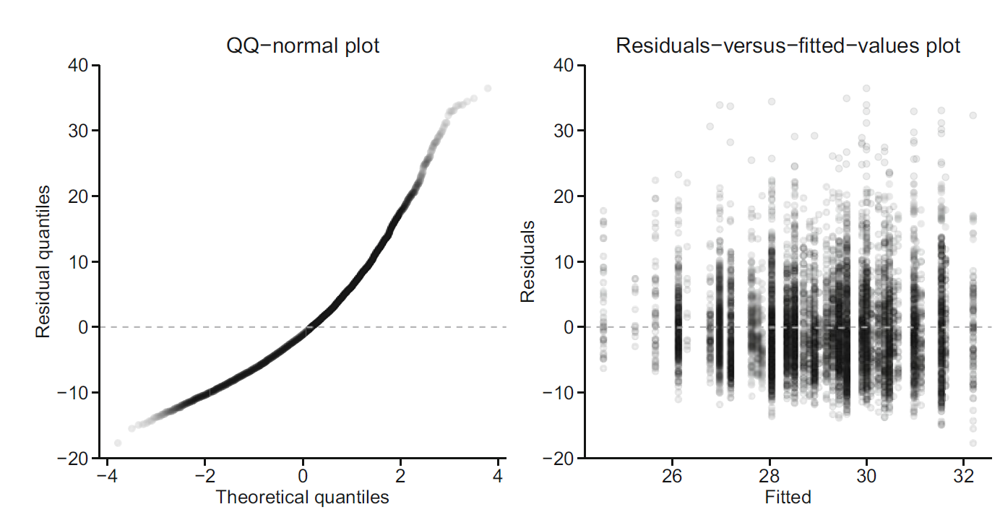
표준 진단 그림은 서로 다른 문제를 평가한다. 잔차-적합값 그림은 평균함수의 비선형성과 이분산성을, 정규 Q–Q 그림은 잔차분포의 꼬리와 비대칭을, Scale–Location 그림은 표준화 잔차의 크기가 적합값에 따라 변하는지를, 잔차-레버리지 그림은 높은 레버리지와 큰 잔차가 결합된 영향점을 보여준다. 한 그림만으로 가정을 확정하기보다 여러 진단과 연구설계를 함께 해석해야 한다.
대규모 표본에서는 잔차가 완벽하게 정규분포를 따르지 않더라도 계수 추정량이 근사적으로 정규분포를 따를 수 있다. 그러나 심한 이분산성, 군집상관, 잘못된 평균구조 또는 영향력이 큰 관측치는 표준오차와 추론에 중요한 영향을 줄 수 있다.
이분산성이 의심되면 이분산성-강건 표준오차를 사용할 수 있다. 군집자료에서는 군집-강건 표준오차, 혼합모형 또는 일반화추정방정식과 같은 방법이 필요하다.
강건 분산추정량은 일반적으로 샌드위치 형태를 갖는다.
\[ \widehat{\operatorname{Var}}_{\mathrm{robust}} (\widehat{\boldsymbol\beta}) = (\mathbf X^{\mathsf T}\mathbf X)^{-1} \mathbf X^{\mathsf T}\widehat{\boldsymbol\Omega}\mathbf X (\mathbf X^{\mathsf T}\mathbf X)^{-1}. \]
고전적 등분산 모형에서는 \(\widehat{\boldsymbol\Omega}=\widehat\sigma^2\mathbf I\)이지만, 이분산성-강건 방법은 관측치별 잔차크기를 사용하여 대각원소를 다르게 추정한다. HC3는 높은 레버리지 관측치의 잔차를 더 크게 보정하여 중소표본에서 자주 사용된다. 강건 표준오차는 잘못된 평균함수, 심한 영향점 또는 누락된 군집상관을 자동으로 해결하지는 않는다.
3.12 모형 적합도와 적절성
결정계수는 결과의 전체 제곱합 중 회귀모형이 설명하는 비율이다.
\[ R^2=1-\frac{\mathrm{SSE}}{\mathrm{SST}}, \]
\[ \mathrm{SST}=\sum_{i=1}^{n}(Y_i-\bar Y)^2. \]
수정 결정계수는 공변량 수에 대한 벌점을 포함한다.
절편이 포함된 최소제곱 회귀에서는
\[ \mathrm{SST}=\mathrm{SSR}+\mathrm{SSE} \]
가 성립한다. 여기서
\[ \mathrm{SSR}=\sum_{i=1}^{n}(\widehat Y_i-\bar Y)^2 \]
는 회귀가 설명한 제곱합이다. 따라서
\[ R^2=\frac{\mathrm{SSR}}{\mathrm{SST}} \]
로도 쓸 수 있다. 이 직교분해는 절편이 포함되고 동일한 자료에서 최소제곱으로 적합했을 때 성립한다.
\[ R^2_{\mathrm{adj}} =1-\frac{\mathrm{SSE}/(n-p)}{\mathrm{SST}/(n-1)}. \]
\(R^2\)는 공변량을 추가할수록 감소하지 않지만 수정 \(R^2\)는 불필요한 변수를 추가하면 감소할 수 있다. 다만 낮은 \(R^2\)가 곧 잘못된 모형을 뜻하지 않는다. 관찰연구에서 관심은 특정 평균 차이의 추정과 가설검정일 수 있으며, 이 경우 전체 변이 설명력이 낮아도 연구 질문에 답할 수 있다.
잔차표준오차 또는 평균제곱근오차는 결과변수의 원래 단위로 평균적인 예측오차의 크기를 나타낸다.
\[ \operatorname{RMSE}_{\mathrm{train}} = \sqrt{\frac{1}{n}\sum_{i=1}^{n}(Y_i-\widehat Y_i)^2}. \]
추론을 위한 \(\widehat\sigma\)는 자유도 보정을 위해 분모에 \(n-p\)를 사용하지만, 기술적 학습오차의 RMSE는 흔히 \(n\)으로 나눈다. 새로운 자료에서 계산한 검증 RMSE는 모형의 일반화 성능을 평가한다. 표본 내 \(R^2\)가 높아도 과적합되면 표본 밖 오차가 클 수 있다.
모형의 적절성은 목적에 따라 판단한다.
- 연관성 연구에서는 계수의 해석과 추론 가정이 중요하다.
- 변이 설명에서는 \(R^2\)와 잔차 구조가 중요하다.
- 인과추론에서는 교환가능성, 양의 확률, 일관성과 올바른 교란 조정이 중요하다.
- 예측에서는 독립 자료의 예측오차와 보정이 중요하다.
3.13 분위수 회귀
평균이 아니라 조건부 분위수를 모형화하려면 분위수 회귀(quantile regression)를 사용한다. \(0<\tau<1\)에 대해 조건부 \(\tau\) 분위수는
\[ Q_Y(\tau\mid X) =\beta_0(\tau)+\beta_1(\tau)X_1+\cdots+\beta_k(\tau)X_k \]
로 표현한다.
분위수 회귀는 비대칭 손실함수인 체크함수를 최소화한다.
\[ \widehat{\boldsymbol\beta}(\tau) =\arg\min_{\boldsymbol\beta} \sum_{i=1}^{n} \rho_\tau\left(Y_i-X_i^{\mathsf T}\boldsymbol\beta\right), \]
\[ \rho_\tau(u)=u\{\tau-I(u<0)\}. \]
\(\tau=0.5\)이면 조건부 중앙값 회귀가 된다. 제1사분위수와 제3사분위수를 함께 모형화하면 공변량에 따라 결과 분포의 폭이 어떻게 달라지는지 확인할 수 있다.
체크함수는 양의 잔차와 음의 잔차에 서로 다른 가중치를 부여한다.
\[ \rho_\tau(u) = \begin{cases} \tau u, & u\ge0,\\ (\tau-1)u, & u<0. \end{cases} \]
\(\tau=0.75\)이면 예측값보다 큰 관측치의 잔차에 0.75, 작은 관측치의 절댓값에 0.25의 가중치를 부여한다. 최적점에서는 조건부로 관측치의 약 75%가 적합된 제3사분위수 아래에 놓이게 된다. 중앙값 회귀는 절대편차를 최소화하므로 극단적인 결과값에 평균회귀보다 덜 민감하다.
분위수 회귀계수 \(\beta_j(\tau)\)는 다른 공변량을 고정했을 때 \(X_j\) 1단위 증가에 따른 조건부 \(\tau\) 분위수의 차이다. 이는 결과를 분위수별 하위집단으로 나누어 별도의 선형회귀를 하는 것과 다르다. 또한 서로 다른 \(\tau\)에서 독립적으로 적합하면 추정된 분위수 곡선이 교차할 수 있으므로, 여러 분위수를 동시에 해석할 때는 관측 범위에서 순서가 유지되는지 확인해야 한다.
분위수 회귀의 표준오차는 오차분포의 밀도와 이분산성에 의존한다. 점근적 방법을 사용할 수 있지만, 복잡한 자료구조에서는 부트스트랩이 실용적인 대안이 된다. 군집자료라면 개별 관측치가 아니라 군집 단위 재표집이 필요하다.
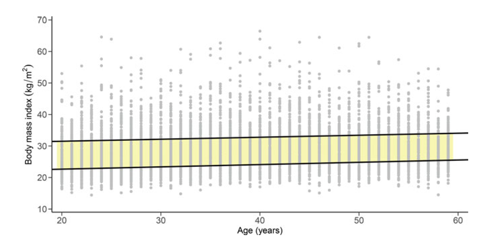
그림에서 평균회귀선은 조건부 분포의 중심을 하나의 선으로 요약하지만, 서로 다른 분위수선은 분포의 하단과 상단이 공변량에 따라 어떻게 이동하는지를 보여준다. 분위수선 사이의 수직거리가 연령에 따라 넓어지면 조건부 분산 또는 분포의 비대칭이 변한다는 신호이다. 분위수별 기울기가 같으면 분포가 거의 평행하게 이동하고, 기울기가 다르면 분포의 모양 자체가 달라질 수 있다.
예시에서 연령 계수는 제1사분위수에서 0.08, 제3사분위수에서 0.05이다. 연도 계수는 제1사분위수에서 0.89, 제3사분위수에서 1.85로, 후기 연도의 변화가 상위 분위수에서 더 크게 나타난다.
| 변수 | 제1사분위수 계수 | 표준오차 | p값 | 제3사분위수 계수 | 표준오차 | p값 |
|---|---|---|---|---|---|---|
| 절편 | 20.29 | 0.30 | <0.001 | 27.92 | 0.54 | <0.001 |
| 여성 | -0.46 | 0.16 | 0.003 | 2.16 | 0.27 | <0.001 |
| 비히스패닉 흑인 | 0.75 | 0.25 | 0.003 | 2.80 | 0.40 | <0.001 |
| 멕시코계 미국인 | 1.83 | 0.20 | <0.001 | 1.05 | 0.35 | 0.003 |
| 기타 히스패닉 | 1.29 | 0.33 | <0.001 | 0.67 | 0.45 | 0.14 |
| 기타/혼합 | -1.79 | 0.22 | <0.001 | -2.83 | 0.43 | <0.001 |
| 연령 | 0.08 | 0.01 | <0.001 | 0.05 | 0.01 | <0.001 |
| 2015-2016년 | 0.89 | 0.16 | <0.001 | 1.85 | 0.28 | <0.001 |
3.14 비모수 회귀와 평활화
선형회귀는 공변량이 1단위 증가할 때 평균 변화가 일정하다고 가정한다. 넓은 연령 범위에서는 이 가정이 지나치게 제한적일 수 있다. 비모수 회귀는 특정 함수 형태를 강하게 가정하지 않고 가까운 공변량 값을 가진 관측치의 정보를 빌려 조건부 평균을 추정한다.
3.14.1 구간화
가장 단순한 방법은 연령을 여러 구간으로 나눈 뒤 구간별 평균을 계산하는 것이다. 구간이 적으면 과도하게 평활화되고, 구간이 많으면 각 구간의 표본수가 작아져 추정이 불안정해진다.
구간화는 각 구간 안에서 조건부 평균이 일정한 계단함수를 가정하는 것과 같다. 구간폭을 \(h\)라 할 때 작은 \(h\)는 세밀한 구조를 표현하지만 구간별 표본수가 줄어 분산이 커지고, 큰 \(h\)는 분산을 줄이는 대신 곡률을 놓쳐 편향이 커진다. 이는 비모수 회귀 전반의 편향–분산 상충(bias–variance trade-off)을 가장 단순하게 보여준다. 또한 구간 경계가 조금만 바뀌어도 평균이 달라질 수 있어 경계 선택에 민감하다.
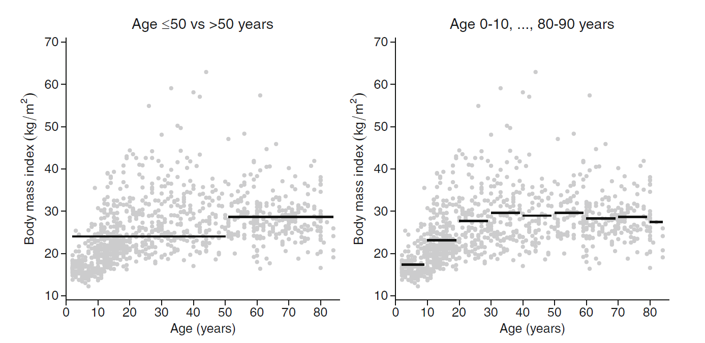
그림에서 구간이 넓으면 연령에 따른 세부 변화가 사라지고, 구간이 좁으면 인접 구간 평균이 불규칙하게 흔들린다. 각 점의 불확실성은 구간별 표본수와 구간 안 BMI 변이에 의해 달라지므로, 구간평균을 연결한 선의 작은 굴곡을 실제 생물학적 변화로 과도하게 해석해서는 안 된다.
3.14.2 커널 회귀
커널 회귀는 관심점 \(x\) 주변 관측치에 가중치를 부여하여 조건부 평균을 추정한다.
\[ \widehat m(x) =\frac{\sum_{i=1}^{n}K_h(x-X_i)Y_i} {\sum_{i=1}^{n}K_h(x-X_i)}, \]
\[ K_h(u)=\frac{1}{h}K\left(\frac{u}{h}\right). \]
\(K\)는 커널 함수이고 \(h\)는 대역폭(bandwidth)이다. 균등 커널은 일정한 창 안의 관측치에 같은 가중치를 부여하고, 정규 커널은 관심점에서 멀어질수록 가중치를 부드럽게 감소시킨다.
가중치를
\[ w_i(x) = \frac{K_h(x-X_i)} {\sum_{j=1}^{n}K_h(x-X_j)} \]
로 정의하면 \(\sum_i w_i(x)=1\)이고
\[ \widehat m(x)=\sum_{i=1}^{n}w_i(x)Y_i \]
가 된다. 즉, Nadaraya–Watson 커널 추정량은 관심점 \(x\)에 가까운 관측치일수록 큰 가중치를 주는 국소 가중평균이다. 커널 함수의 구체적 모양보다 대역폭이 추정곡선에 더 큰 영향을 주는 경우가 많다.
대역폭은 거리의 척도를 정한다. \(h\)가 작으면 매우 가까운 관측치만 사용하여 편향은 작지만 분산이 커지고, \(h\)가 크면 더 많은 관측치를 사용하여 분산은 작지만 국소 구조가 희석된다. 교차검증은 한 관측치를 제외하고 예측한 제곱오차를 최소화하는 방식으로 \(h\)를 선택할 수 있다.
국소상수 커널 회귀는 공변량 범위의 경계에서 한쪽 방향의 자료만 사용할 수 있어 경계편향이 커질 수 있다. 국소선형회귀는 각 관심점 주변에서 가중 직선을 적합하여 경계편향과 설계밀도 변화에 대한 문제를 완화한다. LOESS는 국소 다항회귀의 대표적인 구현이다.
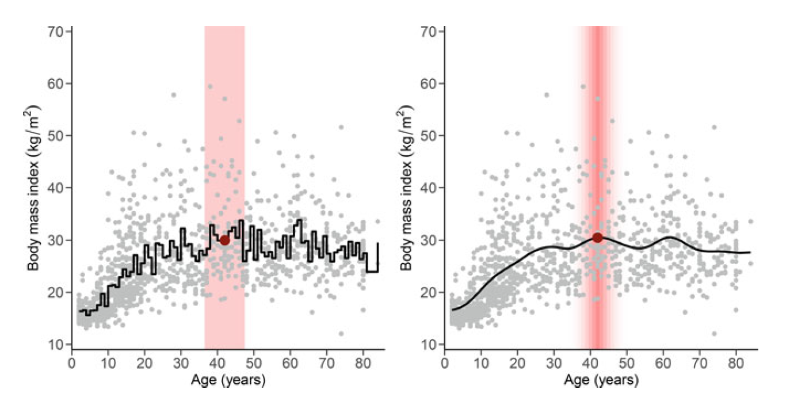
그림에서 작은 대역폭의 곡선은 연령별 표본잡음까지 따라가며 굴곡이 많고, 큰 대역폭의 곡선은 완만하지만 실제 비선형 구조를 놓칠 수 있다. 적절한 평활화는 시각적으로 가장 매끄러운 곡선을 선택하는 문제가 아니라, 새로운 관측치에 대한 편향과 분산을 균형 있게 줄이는 문제이다. 불확실성 띠를 함께 제시할 때는 대역폭 선택에서 발생하는 추가 불확실성이 일반적인 점별 표준오차에 완전히 반영되지 않을 수 있음을 유의해야 한다.
대역폭이 너무 작으면 곡선이 잡음에 민감해지고, 너무 크면 실제 구조가 지나치게 평활화된다. 공변량이 많아질수록 국소적으로 이용 가능한 관측치가 급격히 줄어드는 차원의 저주가 발생한다. 이러한 문제를 완화하면서 비선형성을 표현하는 방법으로 스플라인과 일반화가법모형(generalized additive model)을 사용할 수 있다.
3.15 R을 이용한 분석
아래 코드는 NHANES 패키지의 공개 예제자료를 이용한다. 원서의 조사연도와 표본 구성은 다를 수 있지만 선형회귀, 상호작용, 진단, 분위수 회귀와 평활화 절차를 재현할 수 있다.
이 코드는 회귀분석의 계산 절차를 보여주기 위해 lm()을 사용한다. NHANES 예제자료의 가중치와 복합표본설계를 반영하지 않으므로, 아래 표준오차와 p값은 미국 모집단에 대한 공식 추론으로 해석하지 않는다. 실제 NHANES 분석에서는 분석대상 정의에 맞는 가중치와 survey 패키지의 조사설계 객체를 사용해야 한다.
3.15.1 분석자료 준비
bmi_dat <- NHANES |>
transmute(
bmi = BMI,
age = Age,
sex = factor(Gender),
race = factor(Race1),
survey = factor(SurveyYr)
) |>
filter(
age >= 20,
age <= 59,
complete.cases(bmi, age, sex, race, survey)
)
dplyr::glimpse(bmi_dat)Rows: 5,364
Columns: 5
$ bmi <dbl> 32.22, 32.22, 32.22, 30.57, 27.24, 27.24, 27.24, 23.69, 26.03, …
$ age <int> 34, 34, 34, 49, 45, 45, 45, 58, 54, 58, 50, 33, 56, 56, 57, 54,…
$ sex <fct> male, male, male, female, female, female, female, male, male, f…
$ race <fct> White, White, White, White, White, White, White, White, White, …
$ survey <fct> 2009_10, 2009_10, 2009_10, 2009_10, 2009_10, 2009_10, 2009_10, …complete.cases()는 분석변수 중 하나라도 결측인 대상을 제외하는 완전사례분석을 수행한다. 이 방법이 편향되지 않으려면 결측과 결과의 관계에 대한 가정이 필요하다. 결측이 공변량과 결과에 따라 체계적으로 발생하면 분석표본의 구성과 회귀계수가 달라질 수 있으므로, 실제 연구에서는 변수별 결측률, 결측 패턴과 다중대치의 필요성을 검토해야 한다.
3.15.2 분포와 단순회귀
bmi_dat |>
ggplot(aes(x = bmi, fill = survey)) +
geom_histogram(
aes(y = after_stat(density)),
bins = 35,
alpha = 0.35,
position = "identity"
) +
labs(x = "BMI", y = "밀도", fill = "조사주기") +
theme_minimal()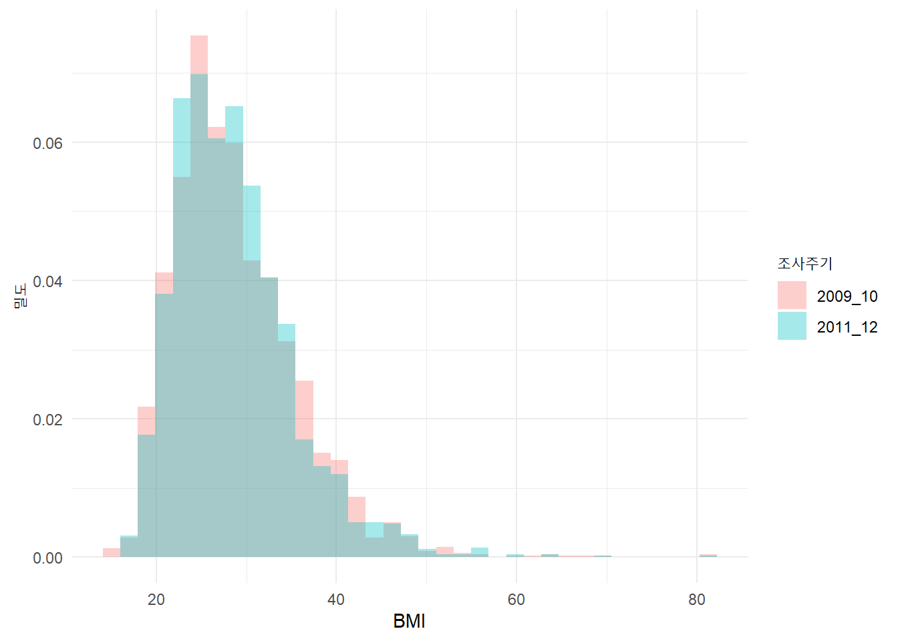
fit_age <- lm(bmi ~ age, data = bmi_dat)
summary(fit_age)
Call:
lm(formula = bmi ~ age, data = bmi_dat)
Residuals:
Min 1Q Median 3Q Max
-13.706 -4.775 -1.240 3.650 52.643
Coefficients:
Estimate Std. Error t value Pr(>|t|)
(Intercept) 26.674833 0.331577 80.45 < 2e-16 ***
age 0.051273 0.008087 6.34 2.48e-10 ***
---
Signif. codes: 0 '***' 0.001 '**' 0.01 '*' 0.05 '.' 0.1 ' ' 1
Residual standard error: 6.752 on 5362 degrees of freedom
Multiple R-squared: 0.007441, Adjusted R-squared: 0.007256
F-statistic: 40.2 on 1 and 5362 DF, p-value: 2.481e-10confint(fit_age) 2.5 % 97.5 %
(Intercept) 26.02480831 27.32485866
age 0.03541923 0.06712595summary(fit_age)의 연령 계수는 단순회귀에서 연령 1세 증가에 따른 평균 BMI 차이이며, 다른 공변량은 조정하지 않은 값이다. confint()는 잔차 자유도에 따른 t 분위수를 사용하여 계수의 신뢰구간을 계산한다. 산점도와 잔차 그림을 함께 확인하여 단일 직선이 연령 범위 전체에서 적절한지 평가해야 한다.
3.15.3 다중회귀와 계수표
fit_main <- lm(
bmi ~ age + sex + race + survey,
data = bmi_dat
)
broom::tidy(fit_main, conf.int = TRUE)# A tibble: 8 × 7
term estimate std.error statistic p.value conf.low conf.high
<chr> <dbl> <dbl> <dbl> <dbl> <dbl> <dbl>
1 (Intercept) 28.9 0.423 68.3 0 28.1 29.7
2 age 0.0559 0.00805 6.94 4.27e-12 0.0401 0.0717
3 sexmale 0.136 0.182 0.748 4.55e- 1 -0.221 0.493
4 raceHispanic -2.10 0.446 -4.70 2.72e- 6 -2.97 -1.22
5 raceMexican -1.30 0.392 -3.31 9.53e- 4 -2.07 -0.528
6 raceWhite -2.75 0.289 -9.52 2.49e-21 -3.31 -2.18
7 raceOther -4.59 0.410 -11.2 9.26e-29 -5.40 -3.79
8 survey2011_12 -0.153 0.182 -0.840 4.01e- 1 -0.510 0.204 broom::glance(fit_main)# A tibble: 1 × 12
r.squared adj.r.squared sigma statistic p.value df logLik AIC BIC
<dbl> <dbl> <dbl> <dbl> <dbl> <dbl> <dbl> <dbl> <dbl>
1 0.0357 0.0344 6.66 28.3 1.42e-38 7 -17777. 35572. 35632.
# ℹ 3 more variables: deviance <dbl>, df.residual <int>, nobs <int>tidy()는 각 계수의 추정치와 신뢰구간을, glance()는 \(R^2\), 수정 \(R^2\), 잔차표준오차와 전체 F 검정 등 모형 수준의 정보를 반환한다. 인종·민족과 조사주기처럼 범주형 변수의 개별 계수는 기준범주와의 차이이며, 변수 전체의 관련성은 anova() 또는 선형가설 검정으로 공동평가해야 한다.
3.15.4 중심화와 해석
bmi_dat <- bmi_dat |>
mutate(age_c = age - median(age))
fit_centered <- lm(
bmi ~ age_c + sex + race + survey,
data = bmi_dat
)
coef(fit_centered) (Intercept) age_c sexmale raceHispanic raceMexican
31.12765397 0.05592455 0.13616351 -2.09537824 -1.29630593
raceWhite raceOther survey2011_12
-2.74876501 -4.59187020 -0.15287790 중심화 전후의 연령 기울기와 적합값은 같지만 절편의 의미는 달라진다.
두 모형의 적합값이 실제로 같은지는 all.equal(fitted(fit_main), fitted(fit_centered))로 확인할 수 있다. 다만 median(age)가 표본에 따라 달라지므로 외부 연구와 절편을 비교하려면 임상적으로 정한 기준연령을 사용하는 것이 더 명확할 수 있다.
3.15.5 상호작용
bmi_dat <- bmi_dat |>
mutate(age_group = factor(if_else(age > 50, ">50", "<=50")))
fit_interaction_reduced <- lm(
bmi ~ sex + race + survey + age_group,
data = bmi_dat
)
fit_interaction <- lm(
bmi ~ sex + race + survey * age_group,
data = bmi_dat
)
broom::tidy(fit_interaction, conf.int = TRUE)# A tibble: 9 × 7
term estimate std.error statistic p.value conf.low conf.high
<chr> <dbl> <dbl> <dbl> <dbl> <dbl> <dbl>
1 (Intercept) 30.9 0.299 103. 0 30.3 31.5
2 sexmale 0.148 0.183 0.810 4.18e- 1 -0.210 0.507
3 raceHispanic -2.14 0.448 -4.77 1.86e- 6 -3.02 -1.26
4 raceMexican -1.35 0.394 -3.44 5.92e- 4 -2.13 -0.582
5 raceWhite -2.65 0.289 -9.14 8.41e-20 -3.21 -2.08
6 raceOther -4.60 0.412 -11.2 1.13e-28 -5.41 -3.80
7 survey2011_12 -0.162 0.206 -0.787 4.31e- 1 -0.565 0.241
8 age_group>50 0.517 0.322 1.60 1.09e- 1 -0.114 1.15
9 survey2011_12:age_gr… 0.117 0.449 0.260 7.95e- 1 -0.763 0.996anova(fit_interaction_reduced, fit_interaction)Analysis of Variance Table
Model 1: bmi ~ sex + race + survey + age_group
Model 2: bmi ~ sex + race + survey * age_group
Res.Df RSS Df Sum of Sq F Pr(>F)
1 5356 239351
2 5355 239348 1 3.014 0.0674 0.7951fit_interaction_reduced와 fit_interaction은 같은 관측치와 같은 주효과를 사용하고, 완전모형에 상호작용항만 추가한 중첩모형이다. 따라서 anova()의 부분 F 검정은 조사주기에 따른 평균 BMI 차이가 연령집단에 따라 달라지는지를 공동평가한다. 상호작용이 유의하지 않더라도 효과수정이 없다고 증명되는 것은 아니며, 신뢰구간이 허용하는 차이의 범위를 함께 확인해야 한다.
3.15.6 강건 표준오차
lmtest::coeftest(
fit_main,
vcov. = sandwich::vcovHC(fit_main, type = "HC3")
)
t test of coefficients:
Estimate Std. Error t value Pr(>|t|)
(Intercept) 28.8906718 0.4895877 59.0102 < 2.2e-16 ***
age 0.0559246 0.0081327 6.8765 6.833e-12 ***
sexmale 0.1361635 0.1828797 0.7446 0.456575
raceHispanic -2.0953782 0.4762001 -4.4002 1.102e-05 ***
raceMexican -1.2963059 0.4305113 -3.0111 0.002615 **
raceWhite -2.7487650 0.3713087 -7.4029 1.539e-13 ***
raceOther -4.5918702 0.4490818 -10.2250 < 2.2e-16 ***
survey2011_12 -0.1528779 0.1823976 -0.8382 0.401980
---
Signif. codes: 0 '***' 0.001 '**' 0.01 '*' 0.05 '.' 0.1 ' ' 1HC3를 적용해도 회귀계수의 점추정치는 최소제곱값과 동일하며 표준오차, 검정통계량과 p값만 달라진다. 고전적 표준오차와 HC3 표준오차의 차이가 크면 이분산성이나 높은 레버리지의 영향을 의심할 수 있지만, 차이가 작다고 해서 평균함수와 독립성 가정이 모두 충족되었다고 결론내릴 수는 없다.
3.15.7 회귀 진단
par(mfrow = c(2, 2))
plot(fit_main)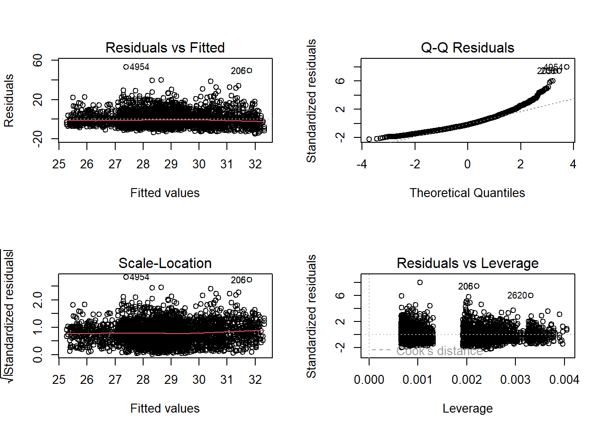
par(mfrow = c(1, 1))진단 그림은 모형 적합 후의 탐색도구이다. 패턴을 발견한 뒤 같은 자료에서 변수변환이나 관측치 제거를 반복하면 최종 추론에 선택과정의 불확실성이 반영되지 않는다. 수정 전후의 결과를 비교하고, 가능하면 사전에 정한 분석계획이나 외부 자료에서 수정된 모형을 검증해야 한다.
3.15.8 중첩모형 비교와 정보기준
fit_reduced <- lm(bmi ~ age + sex + survey, data = bmi_dat)
anova(fit_reduced, fit_main)Analysis of Variance Table
Model 1: bmi ~ age + sex + survey
Model 2: bmi ~ age + sex + race + survey
Res.Df RSS Df Sum of Sq F Pr(>F)
1 5360 244402
2 5356 237505 4 6897.4 38.886 < 2.2e-16 ***
---
Signif. codes: 0 '***' 0.001 '**' 0.01 '*' 0.05 '.' 0.1 ' ' 1AIC(fit_reduced, fit_main) df AIC
fit_reduced 5 35718.05
fit_main 9 35572.50BIC(fit_reduced, fit_main) df BIC
fit_reduced 5 35750.99
fit_main 9 35631.78anova(fit_reduced, fit_main)은 인종·민족 지시변수 전체가 추가로 잔차제곱합을 줄이는지 검정한다. AIC와 BIC는 같은 두 모형을 서로 다른 복잡도 벌점으로 비교한다. 통계적으로 유의한 공동검정, 더 작은 정보기준과 임상적으로 유용한 효과크기는 서로 다른 판단기준이므로 함께 구분하여 해석한다.
3.15.9 분위수 회귀
fit_q25 <- quantreg::rq(
bmi ~ age + sex + race + survey,
tau = 0.25,
data = bmi_dat
)
fit_q75 <- quantreg::rq(
bmi ~ age + sex + race + survey,
tau = 0.75,
data = bmi_dat
)
summary(fit_q25, se = "nid")
Call: quantreg::rq(formula = bmi ~ age + sex + race + survey, tau = 0.25,
data = bmi_dat)
tau: [1] 0.25
Coefficients:
Value Std. Error t value Pr(>|t|)
(Intercept) 20.97240 0.38197 54.90616 0.00000
age 0.07520 0.00637 11.79756 0.00000
sexmale 1.40800 0.14347 9.81396 0.00000
raceHispanic 0.51360 0.45956 1.11758 0.26380
raceMexican 1.33640 0.33013 4.04804 0.00005
raceWhite -0.85600 0.29183 -2.93319 0.00337
raceOther -2.04560 0.30535 -6.69914 0.00000
survey2011_12 0.07880 0.14368 0.54844 0.58341summary(fit_q75, se = "nid")
Call: quantreg::rq(formula = bmi ~ age + sex + race + survey, tau = 0.75,
data = bmi_dat)
tau: [1] 0.75
Coefficients:
Value Std. Error t value Pr(>|t|)
(Intercept) 33.74652 0.70771 47.68415 0.00000
age 0.04348 0.01261 3.44889 0.00057
sexmale -0.20087 0.29607 -0.67846 0.49751
raceHispanic -3.06522 0.77625 -3.94874 0.00008
raceMexican -2.17217 0.55951 -3.88228 0.00010
raceWhite -3.18609 0.51776 -6.15358 0.00000
raceOther -5.54696 0.83699 -6.62726 0.00000
survey2011_12 -0.53348 0.28392 -1.87896 0.06030se = "nid"는 비동일분포 오차를 허용하는 점근적 표준오차를 계산한다. 표본이 작거나 꼬리가 두껍고 희소한 범주가 있는 경우에는 부트스트랩 표준오차를 함께 검토할 수 있다. 제1사분위수와 제3사분위수의 계수 차이는 분포 위치에 따른 연관성의 이질성을 보여주지만, 두 계수의 차이를 공식적으로 검정하려면 두 추정량의 공분산을 고려한 별도의 검정이 필요하다.
3.15.10 커널 평활화와 일반화가법모형
sample_dat <- bmi_dat |>
dplyr::slice_sample(n = min(1500, nrow(bmi_dat)))
sample_dat |>
ggplot(aes(x = age, y = bmi)) +
geom_point(alpha = 0.20) +
geom_smooth(method = "loess", se = FALSE) +
geom_smooth(method = "lm", se = FALSE, linetype = 2) +
labs(x = "연령", y = "BMI") +
theme_minimal()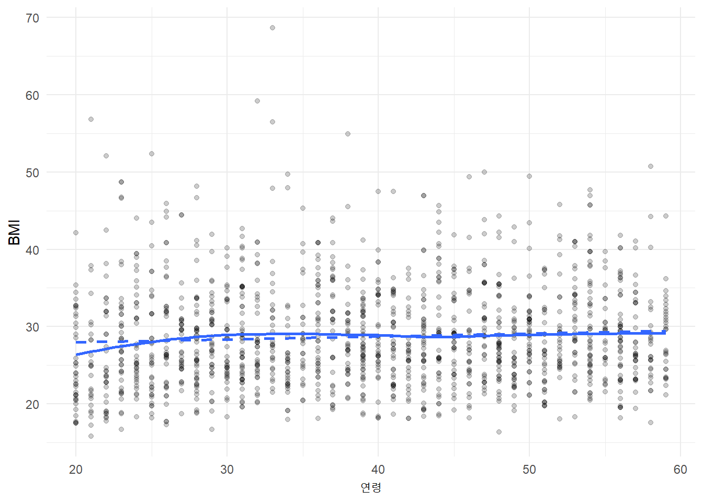
LOESS 곡선과 선형회귀선의 차이는 선형성 가정이 어느 구간에서 부적절할 수 있는지를 시각적으로 보여준다. 다만 같은 자료에 적합한 평활곡선은 탐색적 도구이며, 곡선의 세부 굴곡을 확정적 구조로 해석해서는 안 된다. 점의 밀도가 낮은 연령구간에서는 평활곡선의 불확실성이 더 크다.
kernel_fit <- ksmooth(
x = bmi_dat$age,
y = bmi_dat$bmi,
kernel = "normal",
bandwidth = 3,
x.points = seq(20, 59, by = 0.5)
)
plot(
kernel_fit,
type = "l",
xlab = "연령",
ylab = "평활화된 평균 BMI"
)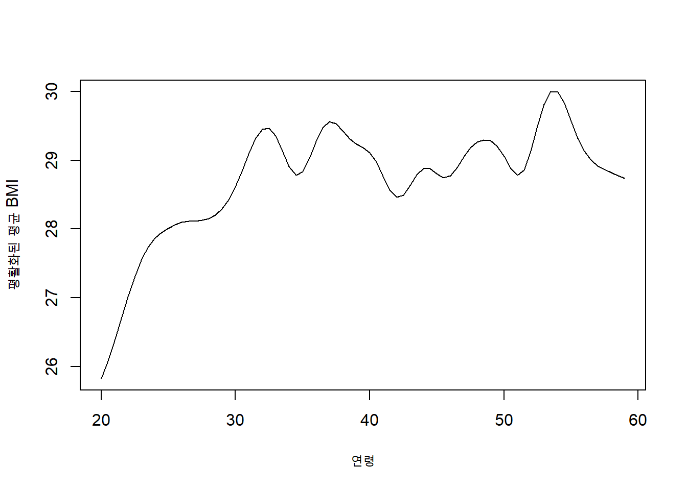
ksmooth()의 bandwidth = 3은 연령축에서 평활화 범위를 정한다. 이 값을 바꾸어 곡선의 민감도를 확인하고, 연구 목적이 예측이라면 교차검증으로 대역폭을 선택하는 것이 바람직하다. 또한 커널 추정은 다른 공변량을 조정하지 않은 연령–BMI의 주변 관계를 나타내므로 다중회귀의 조정된 관계와 직접 같지 않다.